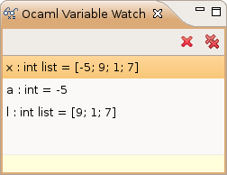

The Ocaml Variable Watch view allows you to watch the value of variables as you are stepping through the program.

To add a variable to this view, type its name in the textbox at the bottom of the view.
To remove a variable from the view, select it and click on the red cross in the toolbar. To delete all variables at once, click on the double-cross.
Since each variable is analyzed for each step of the program, stepping can become exceedingly slow if there are too many variables in this view. So, remove variables you don't need from this view.